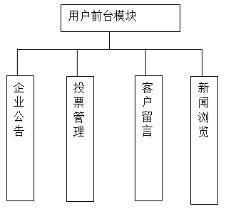

经过对系统的需求分析，将整个系统分为两部分，前台系统和后台系统。前台系统主要是客户新闻浏览、留言管理及投票界面。后台系统是管理员管理员对本网站的管理界面，实现网站的管理功能。
前台系统主要包括企业公告、投票管理、客户留言、新闻浏览等模块。前台系统模块如图4-1。

图4-1 前台系统模块图
后台系统可分为公告管理、新闻管理、留言管理、投票项目设置、投票选项管理。后台系统功能模块图如图4-2。
图 4-2 后台系统模块
1. 企业公告
客户可以及时的了解企业的最新动态的信息，这些信息可以以公告的形式进行发布，使客户对企业的最新动态有所掌握。
2.投票管理
客户可以按照企业提供的投票项目，对投票选项进行投票，为提高投票结果的真实性，本系统对客户投票进行了限制，每个IP只能对一个项目进行一次投票。
3.客户留言
客户可以将对企业的看法，意见等信息以留言的形式保留下来，管理员可以查看客户的留言，并对留言作出回复。
4．新闻浏览
客户可以通过新闻浏览模块，来了解企业的新闻或其它的新闻的信息。
后台管理主要是方便管理员对本站系统进行维护，管理员可以在后台动态的发布相应的信息，完成对网站内容的更新及管理。后台管理主要包括企业公告管理、新闻信息管理、客户留言管理、投票项目设置、投票选项管理等功能。
1．企业公告管理
完成企业公告信息的更新功能。
2．新闻信息管理
完成企业新闻信息的添加或删除功能，用于更新网站的新闻信息。
3．留言管理
管理员可以查看客户的留言，并可以根据留言内容作出回复。
4．投票项目的设置
完成企业的投票项目的管理功能，管理员可以在后台对投票项目的信息进行添加、删除等。
5．投票选项管理
管理员可以在后台针对某个投票项目来管理此项目的投票选项的功能，可以添加及删除投票选项信息，并可以查看投票结果。
虽然系统是从终端用户的角度开始设计的，但是在系统设计的过程中，首先面对的是的管理者。终端用户的需求实际上是系统需求的一部分，更重要的是应先解决管理者对系统管理的需求。在做好后台管理系统的基础上，再做前台系统，由于数据库里有了各种实际的资料，会更加直观。
后台系统主要是为管理员服务的，主要由五个模块组成，公告管理模块，新闻管理模块，留言管理模块，投票项目设置模块，投票选项管理模块。
本页是企业网站管理的入口，为了确保网站与数据库的安全，对进入的人员进行身份验证是十分必要的，尤其是网站的后台管理系统。本页的主要功能就是对用户进行身份验证。在本页中，用户输入用户名及密码，点击登录按钮进行登录。本页面的页面设计如图5-3所示：
图5-3 用户登录界面
用户成功能身份验证后，进入系统管理主界面。主界面采用框架的结构进行设计，用户可以在左边的菜单中，选取相应的功能进行操作。管理员主界面如图5-4所示
图5-4 管理员页面
公告管理模块管理的是网站的公告的信息，此公告信息在系统前台用户可以看到，管理员可以对公告信息进行更新，当更新时，公告信息存入系统的后台数据库中，客户端从数据库里调用此信息进行显示。此页面对应的磁盘文件为gg.jsp。公告管理界面如图5-5所示：
图5-5 公告信息管理页面
新闻管理模块完成新闻信息的添加或删除的功能，管理员可以新增新闻，也可以删除新闻信息，此页面对应的磁盘文件为rjmanager.jsp。企业通知页面的设计如图5-6所示：
图5-6 新闻管理页面
其中“删除”按钮对应页面为delete.jsp，主要代码设计如下：
<%
String id=DateFormate.toGb(request.getParameter("id"));
String op=DateFormate.toGb(request.getParameter("op"));
blogop blop=new blogop();
reblogop reblop=new reblogop();
if("blog".equals(op)){
blop.delete(id);
%>
<script language="javascript">
alert("信息删除成功！");
window.location.href="rjmanager.jsp";
</script>
<%
}
else if("reblog".equals(op))
{
reblop.delete(id);
%>
<script language="javascript">
alert("信息删除成功！");
window.location.href="lymanager.jsp";
</script>
<%
}
%>
留言管理模块完成留言信息的查看及回复功能，管理员可以删除留言信息或作出回复，此页面对应的磁盘的文件为lymanager.jsp。企业公告页面设计如图5-7所示：
图5-7留言管理页面
其中“回复”部分主要代码如下：
投票项目设置模块完成投票项目的添加及删除功能，管理员可以添加投票项目，也可以对投票项目进行删除。投票项目管理模块对应的磁盘文件为tpmanager.jsp,新增投票项目对应的磁盘文件为addtp.jsp。
1． 投票项目管理界面如图5-8所示：
图5-8 投票项目管理页面
2．新增投票项目页面的设计如图5-9所示：
图5-9投票项目添加页面
投票选项设置模块用于设置投票项目对应的选项功能，管理员可以进入到某个投票项目，查看投票信息或对投票选项进行管理，投票选项对应的磁盘文件为tpmxmanager.jsp，选中某个项目，点击管理进入投票选项管理页面，投票选项管理对应的磁盘文件为tpmx.jsp。投票选项管理的页面设计如图5-10所示：
图5-10投票选项管理页面
前台系统主要包括主页面（index.asp）、留言页面（ly.jsp）、新闻浏览页面（news.jsp）。前台主页面设计如图5-11所示：
图5-11前台主页面
客户的主页中，选择某个投票项目，点击“参与投票”，即可以链接到客户投票信息，客户投票根据投票项目的投票类型来判断投票类型是单选还是多选，如果是单选，客户投票对应的盘文件为choosetp1.jsp，如果是多选，则调用choosetp2.jsp。客户投票管理的页面设计如图5-12所示：
图5-12用户投票面面
新闻动态模块完成查看新闻信息的功能，客户可以看到网站上的新闻信息，此页对应的磁盘文件为news.jsp。新闻显示页面设计如图5-13所示：
图5-13 新闻动态页面
在线留言模块完成客户网上留言的功能，客户可以在网站上的留言，此页对应的磁盘文件为ly.jsp。留言页面设计如图5-14所示：
图5-14 留言页面